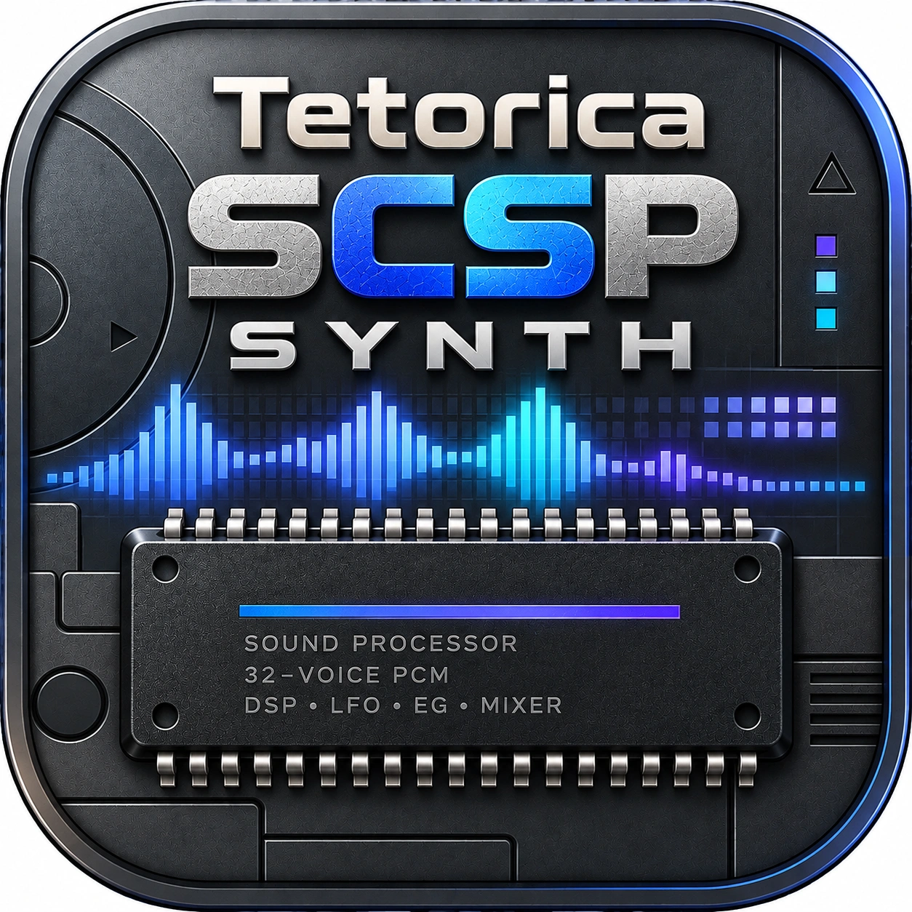

SEGA SATURN · SOUND PROCESSOR
Tetorica SCSP Synth
Shape a waveform. Play a voice.
SCSP PCM ENGINE
Start audio, then play the keys below or use A W S E D F T G Y H U J K.
Keyboard
30 PCM voices / 15 FM voices · 2 source slots reserved.
←
Switch the operator to edit its waveform on the same canvas. Apply drafts before switching; unapplied drawings are discarded. The Modulator is silent at the output; its TL controls FM strength. Mode changes stop existing notes.